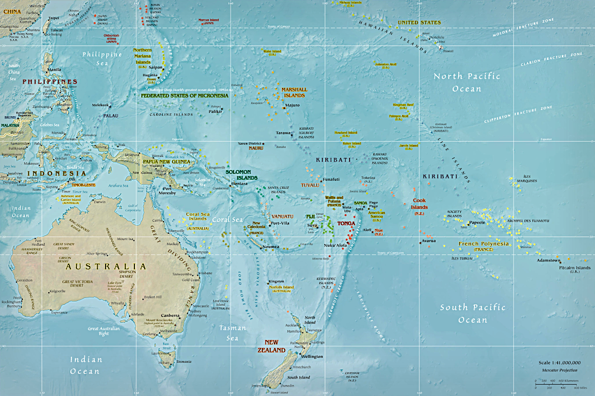

Ozeanien

Ozeanien ist kein Kontinent, sondern eine Gruppe von kleinen und winzigen Inseln im Pazifischen Ozean.
Die Inseln sind recht klein und schwer auf einer Karte darzustellen.
Wir haben es nicht geschafft, eine Karte zu erstellen, die clickbar ist, deshalb gibt es erstmal diesen Platzhalter.
Dies ist die CIA-Karte, die mehr Details wie Unterwassergebirgskämme zeigt.

 Index
Index Themen
Themen Hierarchisch
Hierarchisch Länder
Länder Karten
Karten Suche
Suche